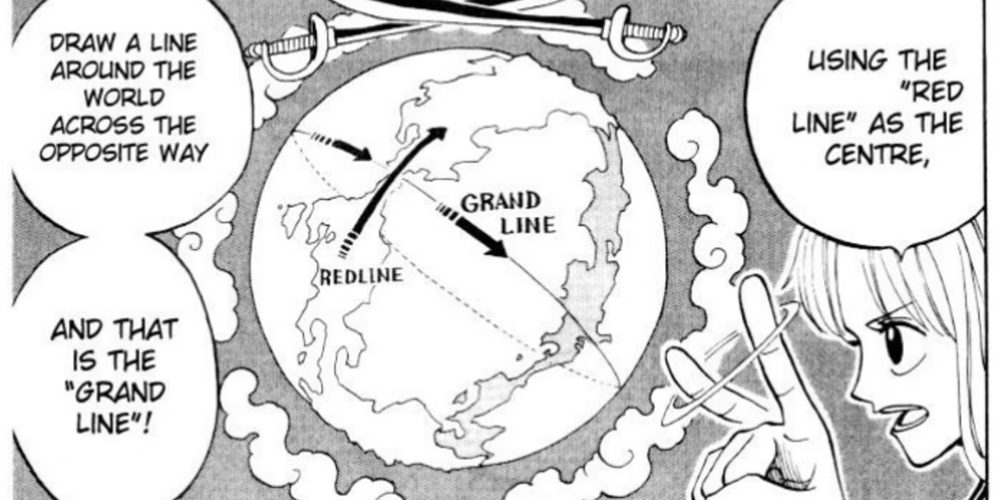
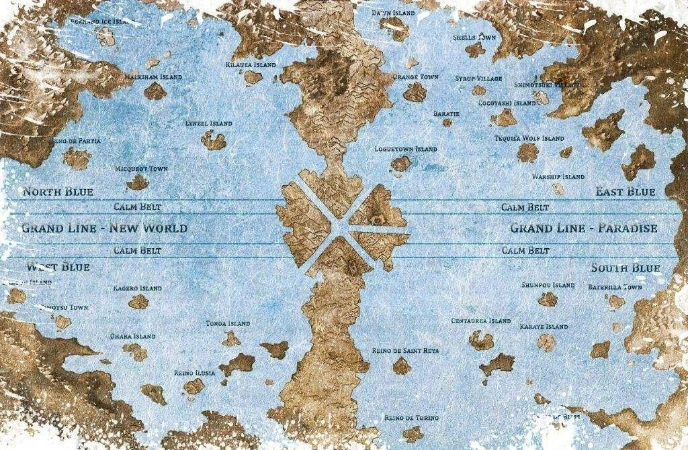

How to Start Reading One Piece
Starting One Piece can be a bit overwhelming due to the sheer number of episodes and chapters, but don't worry! Here's how you can begin your adventure:
1. Manga or Anime?
While both the anime and manga tell the same story, each medium has its pros and cons. If you're short on time, the manga is a faster option. However, the anime brings the action to life with stunning visuals and music. Here's what we recommend:
- If you're new to anime, start with the anime for the experience of the action and music.
- If you prefer reading, the manga offers a more direct route to the story, with less filler.
2. Starting with the First Arc
We recommend starting with the first arc, East Blue, where we meet Monkey D. Luffy and the start of his pirate journey. The story builds from here, introducing new characters and locations as the adventure expands.
3. How to Approach Filler Episodes
For anime viewers, be aware that One Piece contains filler episodes, which aren't part of the original manga. A good rule of thumb is to skip filler episodes, but they can be fun if you're looking for extra content.
The Grand Line
Here's a map of the Grand Line, the dangerous and mysterious sea where much of the adventure takes place. It’s divided into two halves: the East Blue and the West Blue.
 Ready to start reading? Head over to our next page to learn more about what makes One Piece such a fantastic story!